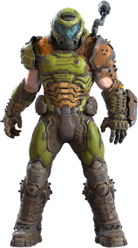

DOOM es un videojuego de disparos en primera persona conocido en ingles como "First Person Shooter " (FPS) desarrollado por id Software y lanzado por primera vez el 10 de diciembre de 1993. Es uno de los títulos más influyentes en la historia de los videojuegos, ya que sentó las bases para el género FPS y popularizó muchas de las mecánicas que hoy en día son comunes.
Historia
En el juego original, el jugador asume el papel de un marine espacial sin nombre, conocido popularmente como "Doomguy" . Este soldado es enviado a Marte como castigo por atacar a un superior. En Marte, está destinado a trabajar para la Union Aerospace Corporation (UAC), una megacorporación que realiza experimentos peligrosos con teletransportación entre Marte y sus lunas. Algo sale mal, y las puertas del infierno se abren, desatando hordas de demonios y criaturas infernales. El objetivo del jugador es luchar contra estas fuerzas demoníacas y sobrevivir.

DOOM GUY
Evolución
DOOM (1993): El juego original fue innovador por sus gráficos en 3D simulados, su diseño de niveles no lineal y su modo multijugador (deathmatch), que sentó las bases para los FPS competitivos. El motor de juego fue extremadamente influyente y permitió la creación de muchos mods por parte de los fans.
DOOM (1993) TRAILER
DOOM II: Hell on Earth (1994): Fue la secuela directa del primer juego. Utilizó el mismo motor, pero presentó nuevos niveles, armas (como la icónica escopeta de dos cañones) y enemigos. La historia seguía al marine mientras defendía la Tierra de una invasión demoníaca.
DOOM II TRAILER
DOOM 3 (2004) : Este fue un reinicio más oscuro y cinemático de la franquicia. Utilizó un motor gráfico mucho más avanzado para la época y se enfocó en una experiencia más terrorífica. A diferencia de los juegos originales, que priorizaban la acción rápida, DOOM 3 apostó por una atmósfera más lenta y aterradora.
DOOM 3 TRAILER
DOOM (2016) : Este juego marcó el regreso a las raíces de la franquicia, combinando la acción rápida y frenética de los primeros títulos con gráficos modernos. Fue muy bien recibido por capturar el espíritu original de DOOM mientras añadía nuevos elementos, como los "glory kills", una mecánica de combate cuerpo a cuerpo brutal.
DOOM 2016 TRAILER
DOOM Eternal (2020) : Es la secuela de DOOM (2016) y amplía aún más la fórmula con un enfoque en la movilidad y en el combate rápido y agresivo. Introdujo nuevas armas, enemigos y habilidades, mejorando la jugabilidad frenética de su predecesor.
DOOM ETERNAL TRAILER
Doom The Dark Ages (2025): es un próximo juego de disparos en primera persona desarrollado por id Software y publicado por Bethesda Softworks. Está destinado a ser la octava entrega principal de la franquicia Doom y la tercera entrega de la serie moderna. Narrativamente sirve como una precuela de Doom (2016) y Doom Eternal (2020), que se desarrolla en un reino durante la Edad Media y representa la historia del origen del Doom Slayer mientras lucha para proteger la tierra de las fuerzas del Infierno. Se lanzará para PlayStation 5, Windows y Xbox Series X/S en 2025.